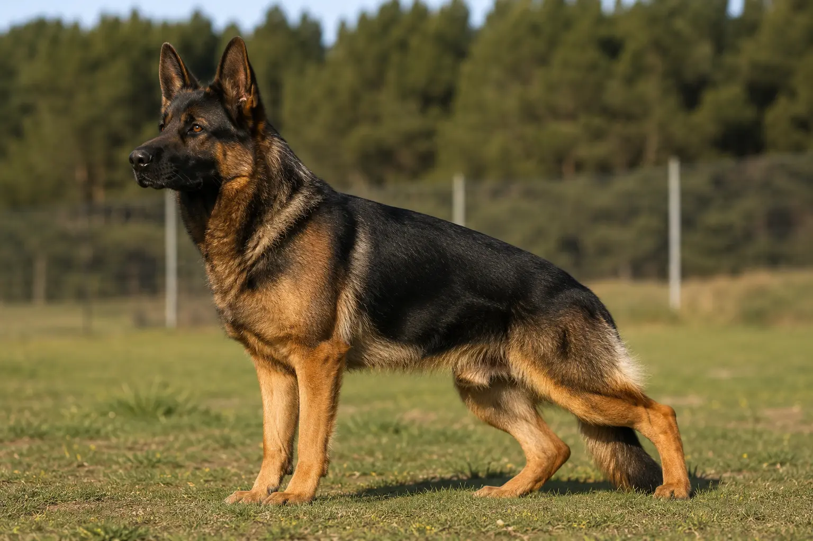
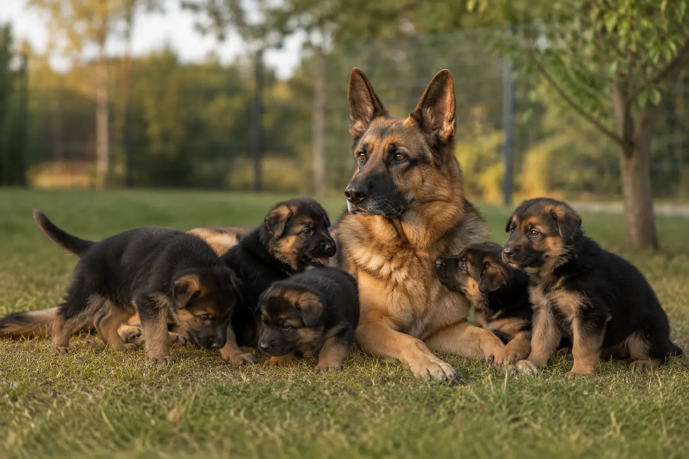

Un pastor alemán de trabajo no es uno de belleza con suerte. Es genética, carácter y un perro construido desde las seis semanas. Llevamos 45 años seleccionando esta línea, y ningún cachorro sale de aquí sin estar sano del todo.
45 años
Seleccionando la raza
6 sem.
Empezamos a construir el perro
100%
Analíticas antes de entregar
5,0★
16 reseñas en Google
Quien sabe de esta raza pregunta siempre lo mismo: «¿puedo ver al padre y a la madre?». Claro que sí. De ahí viene tu cachorro.

Firme, estable y de bocado seguro. Sin miedos heredados y con una genealogía que se puede comprobar. Es el carácter que queremos que pase a la camada.

Carácter equilibrado, salud comprobada y muy buena madre. La hembra transmite tanto temperamento como el macho — por eso la elegimos con el mismo cuidado.
Tu mayor miedo es llevarte un perro enfermo. Aquí lo eliminamos de raíz: analíticas completas el día antes de la entrega. El coste real, unos 150 € por animal, lo asumimos nosotros, no tú.
No es «vacunado y desparasitado» como pone cualquier anuncio. Es un informe clínico de verdad, con cada prueba hecha y firmada, además de un informe sanitario veterinario que describe el estado de salud y las características físicas del animal. Lo recibes el día que te llevas al perro.
Lo digo siempre igual: «te lo llevas en perfectas condiciones, y si no está saludable, no te lo llevas hasta que lo esté». No engañamos a nadie. La garantía es antes, no en un papel a los 15 días.
No tenemos camadas constantes ni vendemos a cualquiera. Si te interesa un perro de verdad, lo normal es esperar a la próxima — y merece la pena.
Dime qué buscas y te aviso en cuanto haya camada prevista. Se reserva con una señal y se formaliza cuando el cachorro está listo y sano. Sin prisas y sin sorpresas.
notifications_activeEntrar en la lista de espera¿No quieres criar desde cero? A veces hay perros adultos ya construidos: carácter definido, resultados visibles y la misma adaptación rápida. Pregunta si hay alguno disponible ahora.
chatPreguntar por adultos
16 reseñas en Google, todas de 5 estrellas. No hemos pedido ni una.
"Muy amables y cercanos, unas instalaciones muy buenas. Llevo allí a mi doberman desde que tenía 5 meses, ahora tiene 11 y estoy muy contento. Juan Miguel es un gran adiestrador."
Jorge Hernandez
Google Maps
"Llevo solo 2 clases con mi pastor belga Malinois y muy contento desde el primer momento. Personal muy agradable y cercano, instalaciones perfectas. Juan Miguel es un profesional."
Jose Antonio Hernandez
Google Maps
"El sitio perfecto para mi beagle. Mi bigotitos se tira del coche en cuanto llegamos a la puerta. Hace dos años que llevo mi beagle, tanto de alojamiento como de peluquería, y para mí genial."
Vicente Miguel Ros
Google Maps · Local Guide
"Profesionales y ante todo buenas personas. Instalaciones únicas idóneas para los perros. Calidad en el servicio y pasión por lo que hacen. Solo puedo decir todo 10."
Francisco Alcaraz
Google Maps
"Me gusta mucho el centro. Trataron muy bien a mi perrita, además el paso por la peluquería súper bien. Me la dejaron súper limpia."
Sarai Ayllon Abellan
Google Maps · Local Guide
"Muy amables y cercanos, unas instalaciones muy buenas. Llevo allí a mi doberman desde que tenía 5 meses, ahora tiene 11 y estoy muy contento. Juan Miguel es un gran adiestrador."
Jorge Hernandez
Google Maps
"Llevo solo 2 clases con mi pastor belga Malinois y muy contento desde el primer momento. Personal muy agradable y cercano, instalaciones perfectas. Juan Miguel es un profesional."
Jose Antonio Hernandez
Google Maps
"El sitio perfecto para mi beagle. Mi bigotitos se tira del coche en cuanto llegamos a la puerta. Hace dos años que llevo mi beagle, tanto de alojamiento como de peluquería, y para mí genial."
Vicente Miguel Ros
Google Maps · Local Guide
"Profesionales y ante todo buenas personas. Instalaciones únicas idóneas para los perros. Calidad en el servicio y pasión por lo que hacen. Solo puedo decir todo 10."
Francisco Alcaraz
Google Maps
"Me gusta mucho el centro. Trataron muy bien a mi perrita, además el paso por la peluquería súper bien. Me la dejaron súper limpia."
Sarai Ayllon Abellan
Google Maps · Local Guide
Una llamada o un WhatsApp y hablas directamente conmigo. Te cuento qué hay disponible y, si no hay nada ahora, te aviso en cuanto haya camada.
Teléfono
670 36 06 76
670 36 06 76
Dónde estamos
Cam. de los Valencianos, 24
30813 Lorca, Murcia · Envíos a toda España